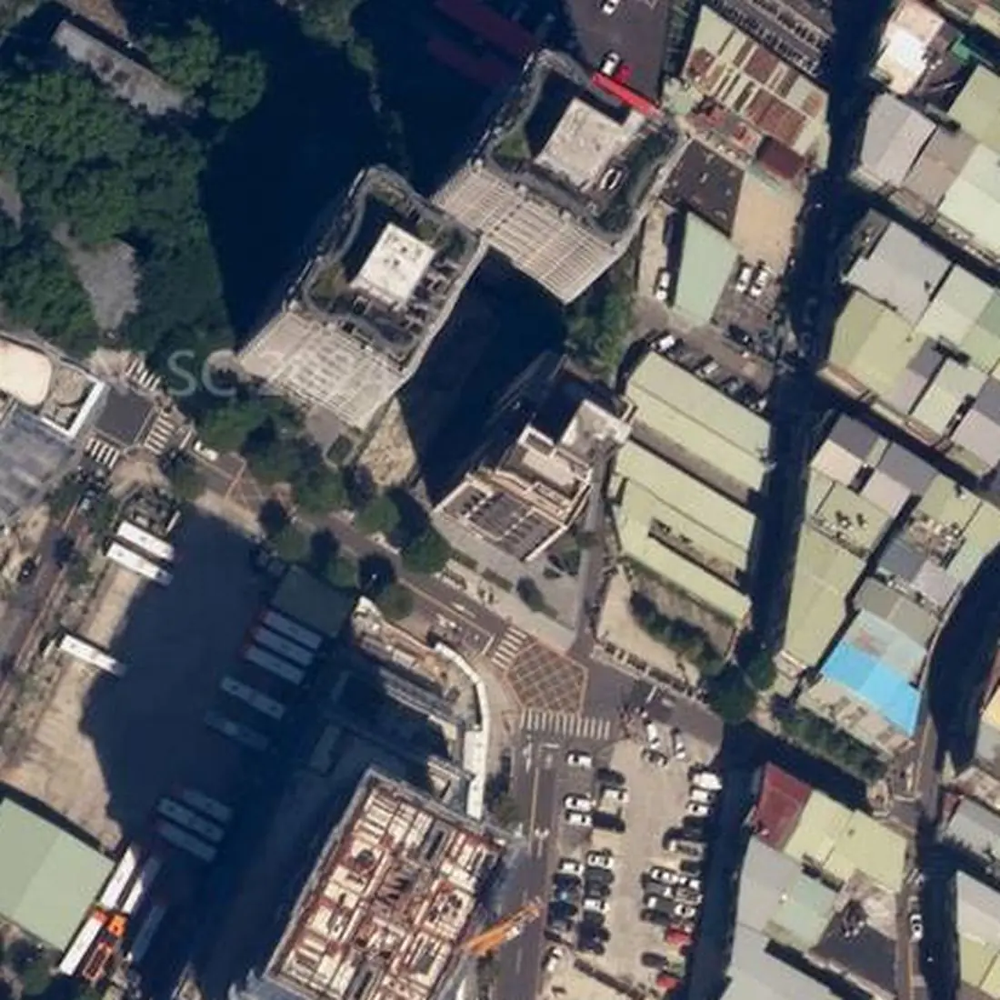

社區分析・文字版
新樸文藝可以買嗎？板橋藝文一街社區優缺點、建商、格局、捷運、日照、學區與看屋重點
帶看新樸文藝時，買方最常問的就是下面這幾題。我把查過的資料整理在這篇，每一題第一段先講結論，跟上面的互動簡報（3D 模型、日照模擬、步行地圖）是同一份資料，數字都標了出處，實際狀況還是要以現場為準。
新樸文藝可以買嗎？先說結論
新樸文藝位於新北市板橋區藝文一街6～12號（雙號），屬江翠北側重劃區AB，民國112年7月完工，地上13層。走到捷運新埔民生站（Y17）步行約1,934公尺、約27分鐘。優點是超商、國中都近、小社區、戶數少、公園、圖書閱覽室走路可到；要留意的是公設比約3成5、捷運要走27分鐘。
適不適合，要看你最在意的是什麼。下面把買方最常搜尋的問題一題一題整理，每題第一段先講結論，數字都標了出處，實際狀況還是以現場為準。

從空中看新樸文藝
藝文一街6～12號雙號，地上13層、地下3層、1棟46戶（1樓有2間店鋪），民國112年完工；臨15公尺的藝文一街。
新樸文藝是哪家建設公司、營造廠蓋的？
使用執照（112板使字第00164號）登記的起造人是僑馥建築經理股份有限公司，承造人（營造廠）是新億營造有限公司。
新樸文藝格局有哪些？幾房、幾坪？
依實價登錄申報資料（截至 115/11/11 公布），新樸文藝有成交紀錄的住宅以3房最多（5筆），主建物約17.2～18.2坪。
| 房數 | 筆數 | 主建物坪數 |
|---|---|---|
| 3房 | 5 | 17.2～18.2 坪 |
| 其他 | 2 |
資料來源：政府實價登錄，依申報的「建物現況格局」與「主建物面積」整理；為申報資料，可能與現況不同（例如改過隔間），不代表個別房屋。已排除特殊交易與大樓蓋好以前簽約的成交，只計住宅用途；同一戶多次成交只計一次，只涵蓋有成交紀錄的戶。資料截至 115/11/11 公布，之後的新成交未納入，以政府最新資料為準。坪數為主建物面積（不含附屬建物、陽台與公設），平方公尺換算成坪、取小數一位；筆數少於 3 筆的房數併入「其他」。僅供參考，實際以權狀與現場為準。
新樸文藝實價登錄有幾筆成交？
查詢範圍：新北市板橋區藝文一街6～12號（雙號），實價登錄買賣資料共 26 筆（交易期間 2019-12-10～2024-12-24）。
只有 1 筆，僅供參考。
資料截至 115/11/01 公布（本社區最近一筆交易日 2024-12-24），之後的成交以實價登錄網最新公告為準；不同戶型、面積不宜直接比較。
新樸文藝到捷運站走路多久？
捷運新埔民生站（Y17）步行約1,934公尺、約27分鐘。
步行距離資料來源：Google 地圖規劃建議路線，實際以現場為準。
新樸文藝日照好嗎？冬天曬得到太陽嗎？
接著看日照。這裡用7樓示意冬天的陽光。
西北邊緊鄰15層的信義嘉和，西南邊隔著藝文一街還有24層的信義嘉品，東邊是比較低的舊社區，不同面向的採光差很多，看屋時可以上午、下午各看1次喔。
日照會因為面向、樓層、前後棟距差很多，看屋時建議上午、下午各去一次，站到窗邊看實際的採光與視野。
太陽位置：天文公式計算；日射：晴天直射理論值，不含散射與雲量；參考政府公開資料；社區以 13 層計（已查證）；結果為示意，實際以現場為準。
新樸文藝學區是哪裡？
依政府公開資料，新樸文藝的學區為國光國小、板橋國中，實際以教育局公告為準。
學區每年可能調整，入學前記得再向學校或教育局確認。
走路到學校：板橋國中步行約314公尺、約4分鐘（步行距離資料來源：Google 地圖規劃建議路線，實際以現場為準）。
新樸文藝有車位嗎？車位有多少？
依使照資料，停車位為汽車47・機車47。
看屋時建議確認車位的產權登記方式、位置與進出動線，機車位是否需要另外申請。
新樸文藝公設有哪些？公設比多少？
公設比約 34.8%（依實價登錄面積計算：成交 26 筆，車位面積已先扣除，集中在 34.82%～34.92%；資料期間 2019-12～2024-12，截至 115/11/01 公布）。
公設實際開放時間與使用規定，以管委會公告與規約為準，看屋時可以請管理室帶看。
公設資料來源：公設比：實價登錄買賣資料的面積欄位，以（建物移轉總面積－車位面積－主建物－附屬建物－陽台）÷（建物移轉總面積－車位面積）計算
新樸文藝有管委會嗎？管理方式怎麼樣？
管理方式：新樸文藝社區管理委員會。
看屋時可以向管理室確認：社區規約、管理費收取方式、公共基金與近期公共修繕計畫，以及有沒有進行中的社區爭議。
新樸文藝生活機能方便嗎？超市、超商、市場走路多久？
步行可到：萊爾富步行約225公尺、約3分鐘；全家便利商店步行約210公尺、約3分鐘；藝香公園步行約362公尺、約5分鐘；新北市立圖書館板橋國光圖書閱覽室步行約302公尺、約4分鐘。
- 萊爾富（便利商店）：步行約225公尺、約3分鐘
- 全家便利商店（便利商店）：步行約210公尺、約3分鐘
- 藝香公園（公園）：步行約362公尺、約5分鐘
- 新北市立圖書館板橋國光圖書閱覽室（圖書館）：步行約302公尺、約4分鐘
步行距離資料來源：Google 地圖規劃建議路線，實際以現場為準。地點名稱與位置參考政府開放資料與連鎖店官方門市查詢。
新樸文藝是哪一年完工的？幾層樓、幾戶？
新樸文藝民國112年7月完工、地上13層、地下3層、46戶、鋼筋混凝土造。
| 完工 | 民國112年7月 |
|---|---|
| 樓高 | 地上13層 |
| 地下層 | 3層 |
| 戶數 | 46戶 |
| 結構 | 鋼筋混凝土造 |
| 停車位 | 汽車47・機車47 |
| 管理 | 新樸文藝社區管理委員會 |
| 臨路 | 藝文一街15米 |
| 使用執照 | 112板使字第00164號 |
參考政府公開資料；實際以現場與地政登記為準。使用執照依新北市政府工務局使用執照存根影像。
新樸文藝優缺點有哪些？
優點：超商、國中都近；小社區、戶數少；公園、圖書閱覽室走路可到。要留意：公設比約3成5；捷運要走27分鐘。
超商、國中都近
萊爾富、全家步行都約3分鐘；學區國中板橋國中約4分鐘。學區以教育局公告為準。
小社區、戶數少
1棟46戶，住戶單純；汽車位47個、機車位47個。
公園、圖書閱覽室走路可到
國光圖書閱覽室步行約4分鐘，藝香公園約5分鐘。
新樸文藝缺點是什麼？看屋時要確認什麼？
看新樸文藝要先確認的是：公設比約3成5；捷運要走27分鐘。
公設比約3成5
依實價登錄面積計算，公設比約34.8%，看坪數時要換算室內實際可用的面積。
捷運要走27分鐘
最近的捷運是環狀線新埔民生站，步行約1934公尺、27分鐘，通勤要搭配公車或騎車。
新樸文藝社區分析影片

▶ 【社區分析】新樸文藝可以買嗎？板橋區藝文一街｜交通・日照・生活機能・實價登錄｜板橋阿陞聊房（YouTube）
新樸文藝附近社區
想一次比較位置，可以看板橋商圈地圖，或回首頁看全部社區分析。
新樸文藝所在區域的整理：江翠重劃區買房。
想看新樸文藝？
想知道新樸文藝目前有沒有房子在賣，歡迎聯絡。
☆預約看屋請聯絡：林津陞 0925-635-678
加官方 LINE：@banqiao.asheng，聊天室輸入「攻略」，系統自動傳送《買房避坑攻略》電子檔（約2萬字／38頁）
全國不動產板橋加盟店
經紀業｜非凡不動產有限公司
經紀人｜謝政峯（99）北縣字第002181號
營業員｜林津陞（99）登字第148103號
資料來源：參考政府公開資料（依政府資料開放授權條款使用）；地圖：© OpenStreetMap contributors（ODbL）。步行距離與日照為規劃與模擬結果，學區以教育局公告為準，房屋資訊仍須以現場、產權資料及正式文件為準。